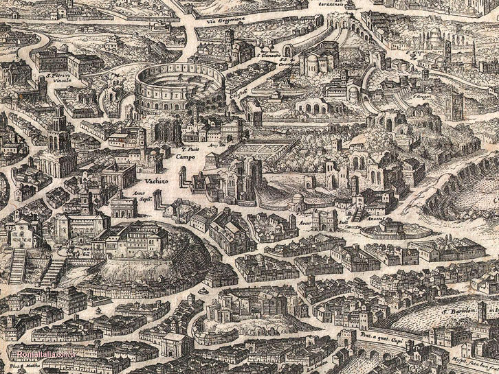
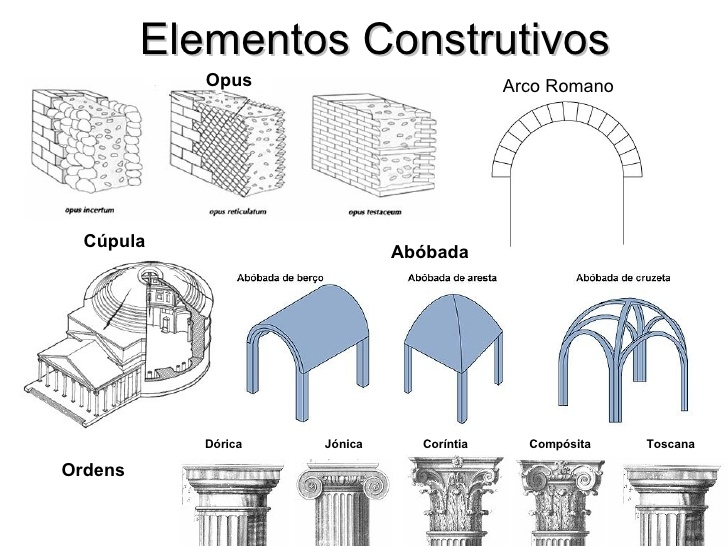
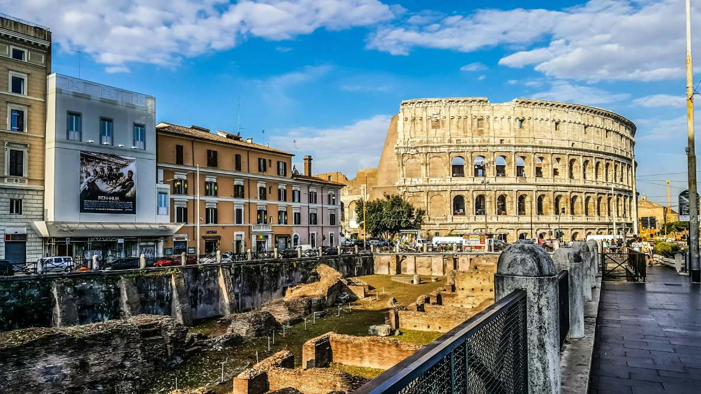
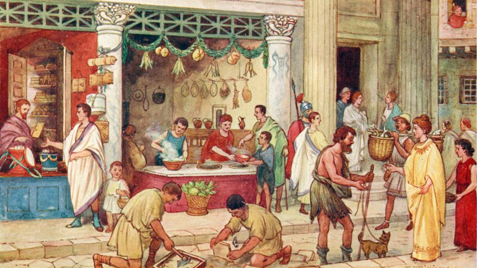
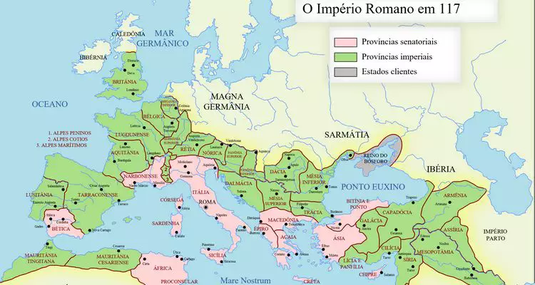
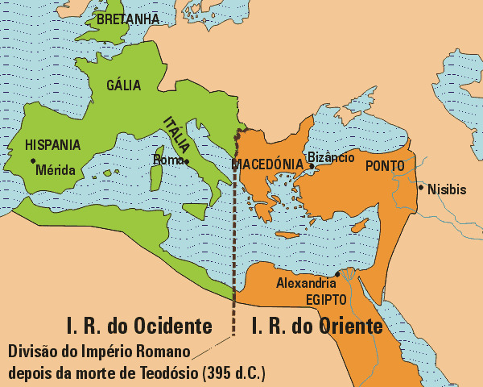

Augusto governou de modo que a participação da política da população geral viesse a diminuir pois era ele
quem escolhia as pessoas a quem assumir os cargos ds margistrados cívis e militares a depender ds relações de amizade e
clientismo entre elas e o imperador.

Com ele no poder do Império ocorreu o periodo chamado Pax romana, (paz romana) um
momento onde houve aparalisação da expansões de território e a administração das provícias foi aperfeiçoada.
Após a morte de Augusto, em 14 da era Cristã, Roma foi governada por 4 dinastias de imperadores:
os Júlios-Claúdios (27 a.C à 68 d.C), Flávios (69-96 d.C), os Antoninos (96-192 d.C) e por ultimo os Severos (193-235 d.C). As três primeiras
dinastias citadas aconteceram no período histórico intitulado Alto Império.
Alto Império
A partir do governo de Augusto, Roma passou pelo processo de consolidação e apogeu do seu poder. Entre esses e muitos
feitos, houve a crescente integração política ao incluir os povos das provincias conquistadas como cidadãos romanos,
dessa forma eles poderiam ingressar nas instituições públicas da época.
Destaca-se ainda nesse período de auge o desenvolvimento da literatura e arquitetura romana. essa última foi caracterizada por
artes e construções sóbrias, funcionais e luxuosas; solidez, uso do arco; uso da abóbada.

Elementos da arquitera romana

Cidade de Roma com o coliseu ao fundo
Em 235 a.D, iniciou-se um grande processo de declinio de Roma, em razão do Estado não conseguir lidar com diversas mudanças
que estavam ocorrendo na época, o baixo império.
Baixo Império
Foi período historico de decandencia do imperio romano em decorrencia da falta de receita, crises políticas, difusão do cristianismo
que pregava valores contrários aos princípios romanos; crise escravista visto que esses eram quem faziam
a economia e os serviços girarem no Império. Além desses fatores, houve a dificuldade de proteger e manter as inumeras fronteiras, o que facilitou
a invasão dos povos inimigos nas provincias.

Cena de um dia cotidiano de plebeus

Províncias e relações territórias de Roma em 117Cena de escravos preparando um banquete em um mosaico conservado em Cartago (Tunísia).
Ao logo do Baixo Império alguns imperadores tentaram introduzir reformas para superar a crise,
como foi o caso da Tetrarquia. na prática, nesse sistema dividia o império em dois, uma parte
ocidental, que estava cada vez mais pobre, e outra oriental
em que cada seria governada por dois coimperadores, os Augustos e os Césares.
A sede oriental estava em um território (Ásia Menor, hoje Turquia) onde a língua principal era o grego.
A sede ocidental tinha Roma como “capital simbólica” e onde ainda estava sediado o senado, mas a sede de comando era Milão.
E no setor ocidental a língua principal era o latim.
Com o passar do tempo já na época do imperador Constantino, vendo que a metade
oriental era a qual mais dava força para o império, a capital foi mudada
para Constantinopla, região da antiga colônia grega de Bizâncio.
Menos de cinquenta anos depois, Teodósio (governo de 378-395 d.C) promoveria mais medidas para contornar a crise.
Além de oficializar o Cristianismo como religiao oficial romana e proibir cultos politeístas, no âmbito administratrivo
dividiu o poder do Império, definitivamente, nas partes ocidentais e oriental. Agora cada uma tinha seu próprio imperador
e as duas teriam destinos totalmente diferentes.

Roma divida em dois
O Ocidente foi esfarelasdo pelos povos germânicos que já haviam invadido as fronteiras há
algum tempo, mas a situação só se manteve controlada até a chegada dos Hunos
na Europa. Esse povo causava pânico